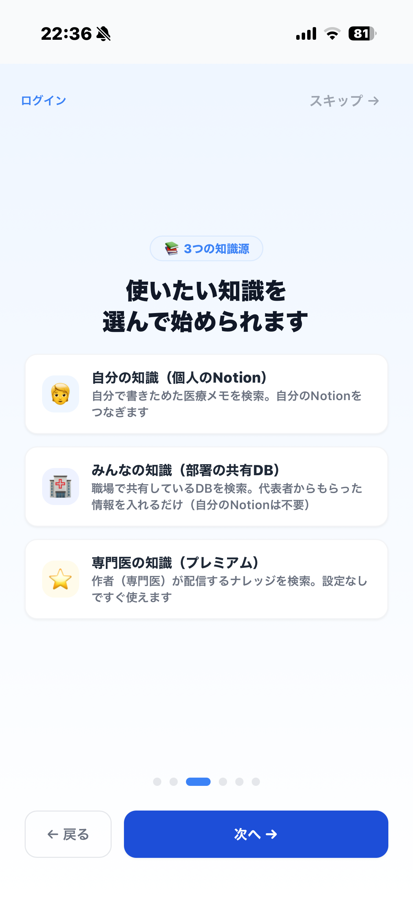

「Notionって何？」「トークンって何？」というところから、一つずつ解説します。順番どおりに進めれば、初めての方でも迷わず設定できます。
設定で出てくる言葉は、ほぼこの3つだけ。ここを押さえれば、あとは流れに沿うだけです。
メモ・表・データベースを作れる無料の万能ノートアプリ。MediNodeは「あなたがNotionに書いた医療メモ」を読みに行って検索します。お持ちでなければ無料登録から。
Notionの中の「表形式のページ集」のこと。1行＝1つの知識。MediNodeは配布テンプレを複製するだけで、必要な形のDBが手に入ります。
MediNodeがあなたのNotionを読むための「合鍵」。ntn_ で始まる文字列です。Notionの設定ページで無料で発行でき、あなたのブラウザにだけ保存されます。
アプリを開くと最初に聞かれます（複数選択OK・あとから追加も可能）。選んだ内容で、続く手順が変わります。下のタブで、自分に合うルートを選んでください。
使いたいものを選んでください（複数選択可）。あとから「設定」で追加もできます。
自分のNotionに作った医療メモを検索します。自分のコネクトTokenとDBを使います。
職場で共有しているDBを検索します。代表者からもらったTokenとURLでOK（自分のNotionは不要）。
作者（専門医）が配信する医療ナレッジを検索します。自分のNotion/Algolia設定は不要で、すぐ使えます。

▼ あなたのルートを選ぶと、手順が切り替わります
自分のNotionに作った医療メモを検索・クイズ化します。手順は「モード選択 → Notion設定 →（必要なら）オプション」。最短ならNotionを繋ぐだけです。
最初の画面で「🧑 自分の知識を使う」にチェックして「次へ」。これでこのルートに進みます。
検索の速さと手軽さのどちらを取るかを選びます。あとから設定でいつでも変更できます。
Algoliaアカウント不要、設定はNotion Tokenのみ。最短ですぐ始められます。
※ 検索のたびNotionへ問い合わせるため、表示まで1〜3秒かかります。
Algoliaで0.1秒以下の高速検索。日本語の部分一致やジャンル絞り込みも快適。
※ Algoliaの無料アカウントが必要。記事を更新するたび再同期します。
ここがメインです。まず「どのDBを検索対象にするか」を決めます。2通りから選べます。
アプリ内のリンクから配布テンプレ（Medical／Reference／📋Manual の3DB入り）を自分のNotionへ複製するだけ。必須プロパティが最初から揃っているので、手間なく始められます。
すでに医療メモのDBをNotionで使っているなら、複製せずそのDBのURLを貼って接続できます。その際は必須プロパティ名（名前・ジャンル・知識レベル・要約・キーワード）を正確に合わせておきます。選択肢の値（ジャンル名など）は自由でOKです。
MediNodeがあなたのDBを読めるように、合鍵を発行して、DBにつなぎます。
ntn_ から始まる文字列をコピー。ntn_ トークン）が発行されます。さらに「どのDBを読ませるか」を、各DBの「…→コネクトを追加」で個別に許可します。この接続を忘れると同期時に「403エラー」になります。ntn_（新）または secret_（旧）で始まります。パスワードと同じく他人に教えないでください。シンプルモードならこの手順は表示されません。パワーモードを選んだ時だけ必要です。
ほとんどの方はスキップでOK。あとから設定画面（⚙️）で変更できます。部署DB・プレミアム・📋マニュアルDBを後から足すのもここからです。
「設定を保存して検索を開始」を押せば完了。シンプルモードなら、Notionを直すと次の検索から即反映されます。お疲れさまでした。
職場・チームで共有しているDBを検索します。自分のNotionは不要。代表者から「トークン」と「DBのURL」をもらって貼るだけ。モード選択もスキップされ、すぐ使えます。
最初の画面で「🏢 みんなの知識を使う」にチェック。部署のみを選んだ場合、Algoliaなどの設定はスキップされます。
チームでDBを管理している代表者（先輩・管理担当）に、次の2つを聞きます。
ntn_ で始まる文字列）ntn_ トークン）でDBに接続します。対象DBに「コネクトを追加」されていれば、メンバー・ゲストの区別なくアプリ内で閲覧できます。もらったトークンとDBのURLを、セットアップ画面（または設定→部署DB）に貼り付けて保存。これだけで部署の知識を検索できます。
自分でNotionを用意しなくても、チームの知識をすぐ引けます。後から「自分の知識」を足したくなったら、設定からいつでも追加できます。
MediNodeは2026年7月中旬に公開予定です。公開されたら、このページを開いたままウィザードを並べて進めるとスムーズです。
公開情報を見る 入力するキーは端末のブラウザにのみ保存されます